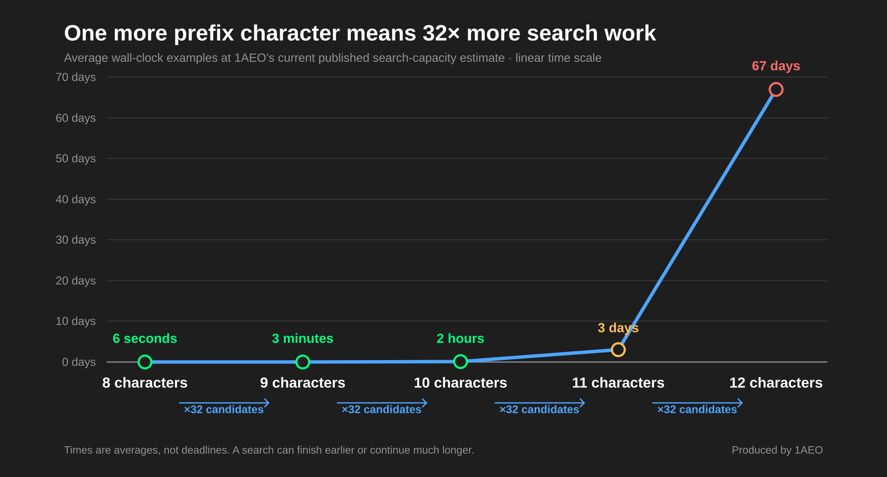
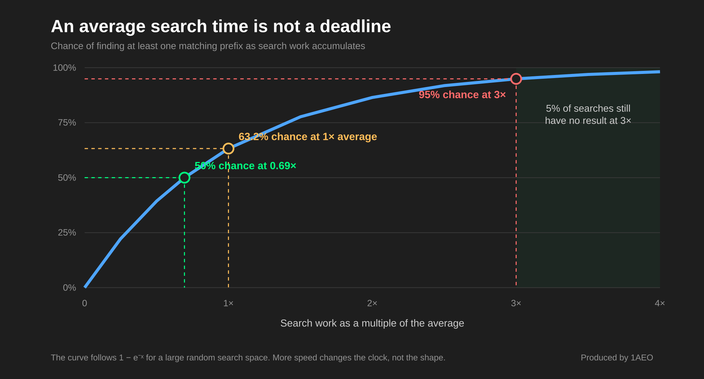

How Long Does a Tor Vanity Onion Address Take? The 32× Rule and Random Search
Short answer: each additional exact prefix character requires about 32 times more candidates on average. Faster search capacity shortens the clock, but no amount of speed turns a random search estimate into a deadline.
What is a vanity prefix?
A Tor v3 onion address contains 56 Base32 characters. In exampleinc…onion, exampleinc is the requested 10-character prefix; the remaining characters come from the generated address.
Tor encodes the service’s public key, checksum, and version into that address. Base32 uses 32 possible characters at each position: lowercase a–z and digits 2–7. For an exact prefix of n characters, about one candidate in 32ⁿ matches. The average search therefore examines about 32ⁿ candidates.
The 32× rule
Adding one character multiplies the work by 32. Adding two multiplies it by 32², or 1,024. Removing one character is also the largest practical way to shorten a search: it cuts the average work to one thirty-second.

Why the average is not a deadline
For uniformly distributed candidates in this enormous search space, each candidate is effectively another independent chance to match. A search can succeed on its first candidate or continue well beyond the average. Previous misses do not meaningfully change the chance of the next candidate.
The useful question is therefore not “when will it finish?” but “what chance of success do I want to fund?” For a large random search space:
- 50% chance after about 0.69 times the average work.
- 63.2% chance after one average search.
- 95% chance after about three average searches.

How to compare search-time estimates
A useful estimate should state three things:
- Exact prefix length: every additional character changes the work by 32×.
- Sustained search capacity: compare distinct candidates searched per second, not only a device name or peak rate.
- Probability target: distinguish the average from a 95%-chance limit, and decide what happens if the limit is reached without a match.
Software improvements and additional workers can reduce wall-clock time when they search distinct candidates, but they do not change the 32× rule or the random probability curve.
Bottom line
Choose the shortest prefix that still carries meaning. Ten characters require 32 times the average work of nine; eleven require 32 times the work of ten. Treat every time estimate as a probability-based planning number, not an appointment.
A readable prefix improves memorability, but it does not authenticate the complete onion address. Users should still verify and publish the full address, as the Tor Project’s vanity-address guidance explains.
Technical basis: Tor’s onion-address encoding specification.